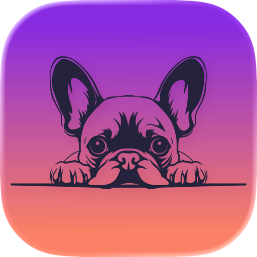

Für kurze Nasen gemacht
Beim Gassi-Eintrag prüft Emma Temperatur und amtliche Hitzewarnungen an deinem Standort. Den Schwellenwert legst du selbst fest. Schnarchen, Röcheln und Rückwärtsniesen protokollierst du gleich mit.

EmmaThe Frenchie Diary · für iPhone & iPad
Futter, Gassi, Gewicht und Atmung – mit einem Fingertipp notiert. Gemacht für Französische Bulldoggen, Möpse und alle kurzen Nasen, die bei Hitze besonderen Schutz brauchen.
Ein Dienstag im Oktober
Zehn Aktivitäten, je ein Fingertipp. Aus kleinen Notizen wird ein Verlauf, der zeigt, wie es deinem Hund wirklich geht – und den du beim Tierarzt einfach aufschlägst.
Kurz und zielstrebig. Es regnet.
Napf leer in vierzig Sekunden.
Aus der eigenen Snack-Liste, einmal antippen.
Über deinem Schwellenwert. Lieber später – Schatten, Wasser, Sofa.
Erinnerung kam pünktlich. Erledigt.
Notiert für den nächsten Tierarztbesuch.
Beim Gassi-Eintrag prüft Emma Temperatur und amtliche Hitzewarnungen an deinem Standort. Den Schwellenwert legst du selbst fest. Schnarchen, Röcheln und Rückwärtsniesen protokollierst du gleich mit.
Gewicht, Futtermenge und Konsistenz im Verlauf über 7, 30 oder 90 Tage. Dazu Erinnerungen für Gassi, Medikamente, Wurmkur, Impfung und Tierarzt.
Kein Konto, kein Tracking, keine Werbung. Alle Einträge liegen ausschließlich auf deinem Gerät. Zum Sichern oder Umziehen exportierst du sie als Datei.